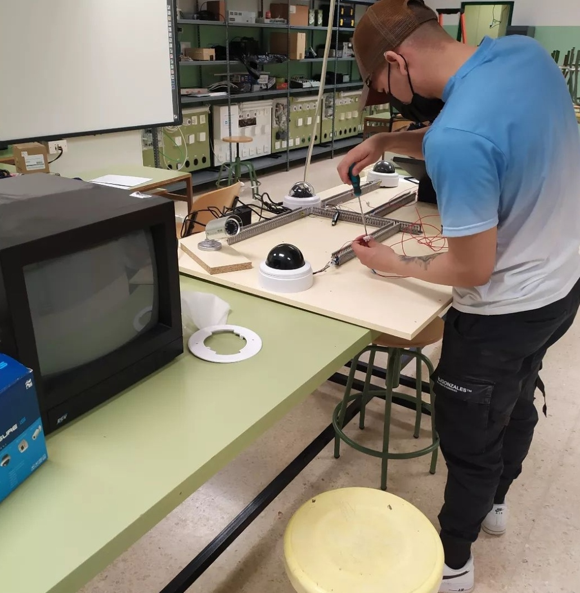
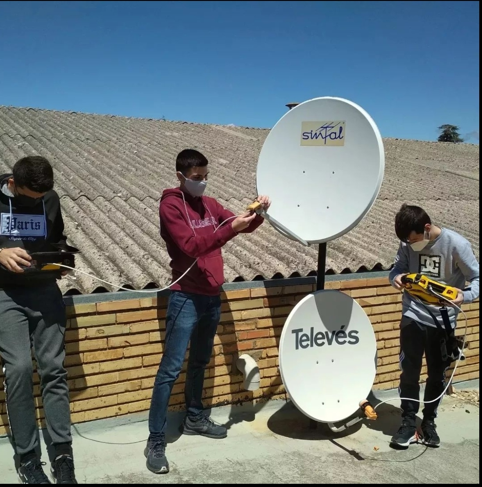

CPIFP Pirámide
Noticias oferta informativa
Sistemas de telecomunicaciones e informaticos
¿Que es?
Este profesional ejerce su actividad en empresas del sector servicios, tanto privadas como públicas, dedicadas a las telecomunicaciones, integración de sistemas, redes de banda ancha, telemática y medios audivisuales, como desarrollador de proyectos, integrador de sistemas y supervisor del montaje y mantenimiento de las instalaciones e infraestructuras, bien por cuenta propia o ajena..
Este profesional sera capaz de:
- Desarrollar proyectos de instalaciones o sistemas de telecomunicaciones obteniendo datos y características para la elaboración de informes y especificaciones.
- Calcular los parámetros de equipos, elementos e instalaciones, cumpliendo la normativa vigente y los requerimientos del cliente.
- Configurar instalaciones y sistemas de telecomunicación, con las especificaciones y las prescripciones reglamentarias.
- Planificar el montaje de instalaciones y sistemas de telecomunicaciones según documentación técnica y condiciones de obra.

